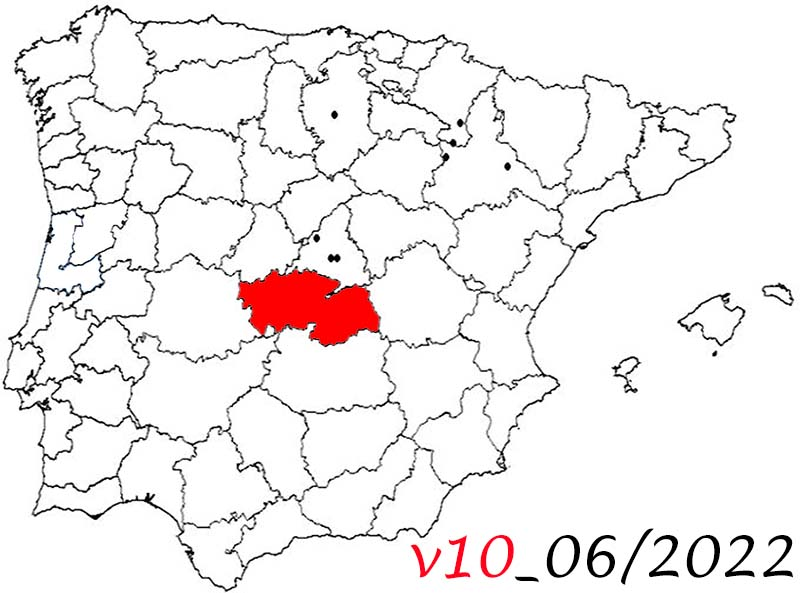
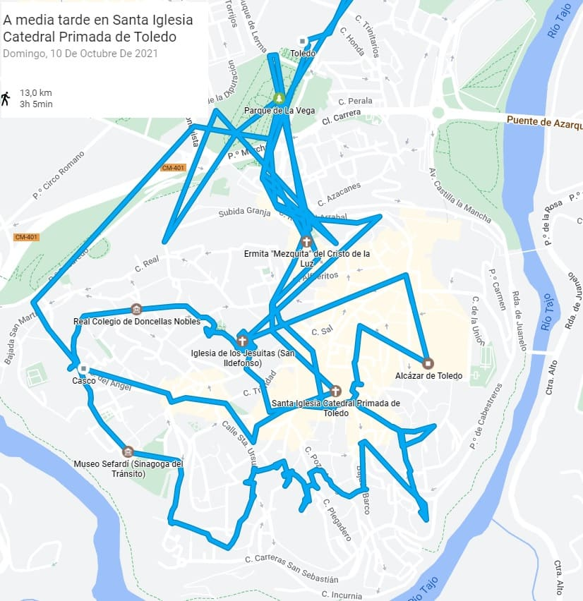
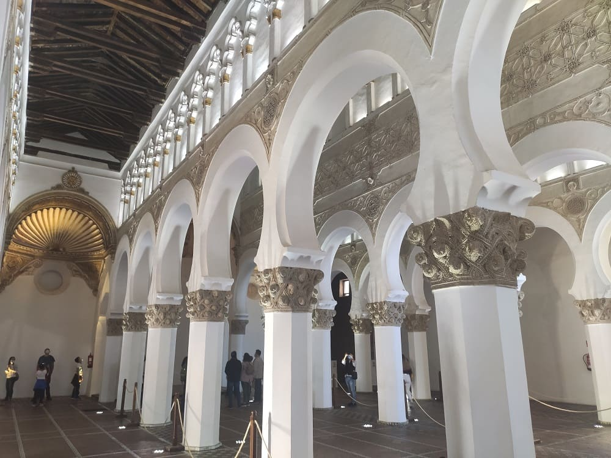
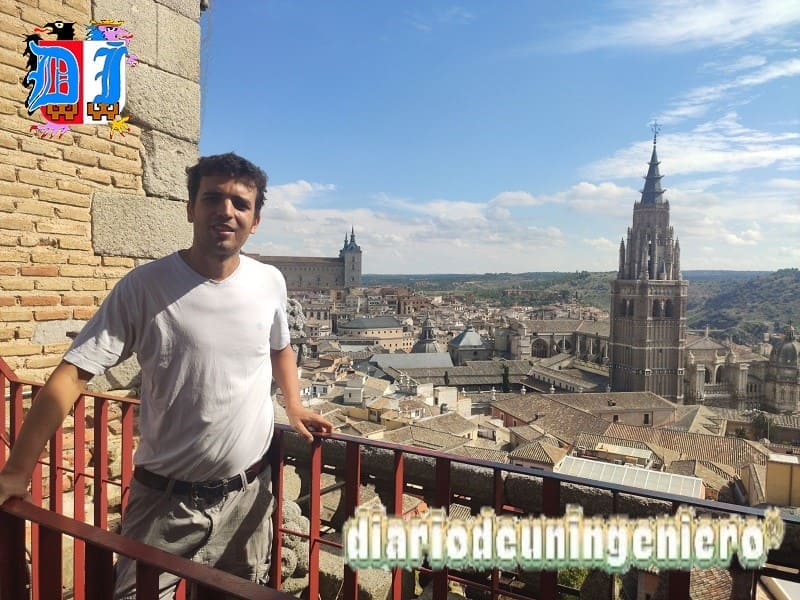
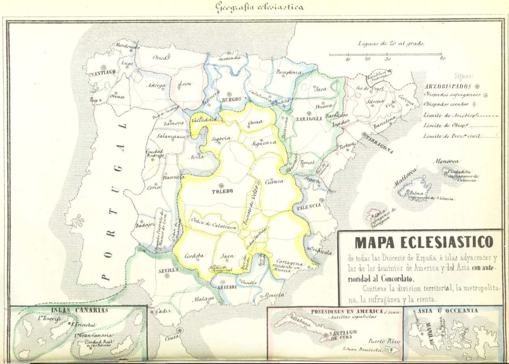

10. Travels through the province of Toledo
10. Travels through the province of Toledo
May 5 to September 9, 2022


207. Toledo
207. Toledo

Different cultures have lived side by side in Toledo since the fall of Rome. That is reflected in the city's architecture. The predominant style is Mudéjar, which incorporates Arabic elements into the peninsula's earlier Visigothic style. You can also see Greco-Roman elements in the walls, Mozarabic architecture with its distinctively Iberian Arabic influences, the Plateresque style fashionable in 16th-century Castile, Gothic religious buildings, and Neoclassical and Baroque architecture.
The clearest example of this diversity is the Toledo School of Translators, founded by Alfonso X (1252–1284), King of Castile and León. Christians, Muslims and Jews worked together there, translating from Arabic into Latin and Castilian. The school played a major role in spreading Greek, Roman, Muslim and Jewish works of science, philosophy and literature throughout the peninsula and Europe.
I chose the Synagogue of Santa María la Blanca, pictured on the right, as the blog image for this article because it best reflects the blending of these three cultures. Arabs built it as a mosque, and after the city was taken it was given to the Jewish community, who decorated the walls with Jewish motifs. Following the expulsion, it became a Christian church. Today it is no longer a place of worship. Although it belongs to the church, it is still known as a synagogue and is considered the city's second most important synagogue.
In this section I'll cover Toledo's most important Christian buildings. The city has more than 100 churches, around 19 of which are designated Sites of Cultural Interest. Another 18 convents have the same protected status.
Also known as the Cathedral of Santa María, it is a Catholic church built predominantly in the Gothic style. It is the third-largest cathedral in Spain, after Seville Cathedral and Palma Cathedral.
Construction began in 1226 and continued until around the 16th century. The cathedral was built on the site of a Visigothic church dating to the time of Saint Eugenius. Toledo had been the capital of the Visigothic kingdom and the seat of its bishop. Following the Arab invasion, the church became a mosque. Several walls and columns from it were preserved during the conversion to a cathedral. After centuries of Arab rule, an agreement was reached in 1085 for the city to surrender peacefully. The agreement promised to preserve the existing buildings and cultures, but the building that is now the cathedral was taken by force and made into a church. A later agreement between the Muslim and Catholic communities allowed Christian worship to continue. The building itself was left as it was until a complete renovation began in 1222. It was rebuilt in the Gothic style of the time, following the example of France, then considered a defender of the faith throughout Europe.
The cathedral was completed in the early 16th century with the addition of the Portal of the Lions and details in the Mozarabic Chapel. It has only one tower. There was insufficient gold to complete the second tower as intended, and a dome was built over it, which is still there today. Several chapels, the sacristy and the chapter house were added from that century onward, in styles ranging from Gothic to Baroque.
The cathedral is distinguished by features of exceptional beauty, including El Transparente, a Baroque work built in 1721 in the Churrigueresque style. Its intricately carved figures are set into the wall among marble brought from Genoa, jasper and bronze. An opening channels daylight toward the tabernacle.
There is also the gold monstrance, the most valuable among Spain's cathedrals on account of its size and the amount of gold it contains. That gold was the first brought from the Americas.
the Chapel of the Descent of the Virgin, at the spot in the cathedral where the Virgin appeared to Saint Ildephonsus.
the Chapel of the Old Kings and the Chapel of the New Kings, where Spanish monarchs from before the 15th century are buried. Their tombs are decorated with their coats of arms and are richly detailed.
The sacristy is decorated throughout with paintings and frescoes. Another highlight is the chapter house , with a gilded coffered ceiling and portraits of all the cardinals of Toledo.
Gothic cloister , a large cloister built where a market once stood. It contains several paintings from the 15th and 16th centuries.
Mozarabic Chapel , which was built from the 16th century onward so that Toledo's residents could continue to worship according to the Mozarabic rite. The city still had a strong Mozarabic tradition dating back to the Catholics who lived under Muslim rule.
Custody of the cathedral, the most important object in the cathedral treasury. It is a work of considerable beauty in an archaizing Gothic style. Originally made of silver, it was gilded in the late 16th century to match the gilded wooden monstrance on the high altar. Enrique de Arfe made it on commission from Cardinal Cisneros.
This is Toledo's second most important religious building and one of its most visited sites, along with the cathedral and the Alcázar.
It was built in the 15th century by order of Isabella the Catholic. She originally intended it to serve as a royal burial place. The Habsburg monarchs were ultimately buried at El Escorial and the Catholic Monarchs at Granada Cathedral.
The building is Isabelline Gothic, like other cathedrals built in the same century, including those in Burgos, Segovia and Granada. Like El Escorial, it served political and state purposes. A religious order maintained it, and its role differed from that of a typical monastery. Architect Juan Guas built the cloister and part of the complex. The cloister is the highlight, with elaborate iconography and decoration on its columns, vaults and arches, as well as spaces for sculptures and paintings. The painted Mudéjar coffered ceilings have been restored and look like new.
The church's political role is evident in the many symbols and coats of arms of the Catholic Monarchs. The imagery connects the monarchy with the divine.

Toledo has many churches. Nineteen are designated Sites of Cultural Interest (BIC), four of them in the Mozarabic style. The churches of San Lucas, Santa Eulalia and Santas Justa y Rufina are among the former mosques converted into churches. I have marked those that retain the floor plan of a mosque with green buttons. Others were built on the sites of mosques, many of which had themselves been built over Visigothic churches or, in some cases, existing Roman buildings.
The church I most recommend visiting is San Ildefonso. Along with its large altar, you can climb its two towers for the best views of the cathedral and the city from every angle. You can also go up to the rooftop platform shown in the photo.
Toledo is Spain's most important diocese, with subordinate dioceses covering all of Castile–La Mancha. In the 19th century, the Diocese of Toledo covered a large area, including present-day Castile–La Mancha, Murcia, Córdoba, Jaén and Old Castile apart from Burgos. There were eight dioceses, including Tarragona (Catalonia), Valencia (Rise up), Seville (west of Andalusia and the Canary Islands), Granada (Granada and Almería), Santiago (Galicia, El Bierzo, Zamora, Salamanca and Extremadura), Lion (Oviedo and Leon), Burgos (Burgos, Cantabria, the Basque Country and Navarre) and Zaragoza (present-day Aragon).

Toledo has a great many convents, which occupy a large part of the historic center. Other cities once had similar numbers, representing most religious orders, and Toledo has retained those orders within the city. Toledo has been a unifying center for the church in Spain since the 6th century, when the Visigoths made it the capital. Under Roman rule, the leading city had been Cartagena, formerly the capital of the Carthaginians, the first people to control a large part of the Iberian Peninsula and link its communities.
I have shown all 19 Toledo convents designated as Sites of Cultural Interest. Nuns still live in most of them and do a great deal of social work throughout the province. They often sell cakes and sweets to help maintain the buildings. Without assistance from the church and the state, the proceeds would fall short of what it costs to restore and maintain most of them.
Besides its convents and churches, Toledo has several chapels worth seeing, particularly Cristo de la Vega. Others include Nuestra Señora de la Estrella, San Eugenia, Virgen de la Cabeza, La Bastida, Virgen de los Desamparados, San Jerónimo, San Roque and El Valle.
Moorish architecture is visible throughout Toledo, since Mudéjar incorporates many of its features. It is especially apparent in the area that housed the Moorish quarter before the expulsion ordered by the Catholic Monarchs. This quarter was at the northwestern entrance to Toledo from the Puerta de Bisagra. It contains the Church of Santiago del Arrabal and the Cristo de la Luz Mosque, which I will describe next.
This mosque is the oldest building in Toledo to survive intact. It is also one of only two still known as mosques, along with the Tornerías Mosque, since the other mosques were converted into churches and remodelled. The other seven are Toledo Cathedral, which was formerly a mosque and in fact was Toledo’s principal mosque, the Church of El Salvador, where recent excavations have uncovered parts of the earlier building that are now open to visitors, the Church of San Sebastián, Santa Justa y Rufina, San Andrés and San Cipriano, San Lorenzo (whose interior was destroyed by fire), and San Román. Mass is still celebrated in four of them according to the Hispanic-Mozarabic rite.
There were more than nine, but the mosques that other buildings were erected over disappeared. Alongside the cathedral, yellow buttons in the churches section indicate the former mosques. The apse was added in the twelfth century, after the capture of the city. It is distinctly Mudéjar, like much of Toledo. The mosque is Visigothic in origin, and before that there was probably a temple dedicated to a Roman god. This building is unique on the Iberian Peninsula because the Moors built it almost entirely of brick. It shares features with other mosques of the period in Spain, such as those in Córdoba and at the Alhambra.The Jewish quarter is in the west of the city, stretching from the Puerta del Cambrón to the river. It is home to two surviving synagogues out of the 13 that once stood in Toledo. Tiles with symbols associated with Jewish culture mark the boundaries of the former quarter.
It was built between the fourteenth and fifteenth centuries. Like other buildings in Toledo, it has a Mudéjar exterior. Today it houses the Sephardic Museum. Jewish worship in Toledo ceased after the expulsion by the Catholic Monarchs in 1411.
Since then it has served as a place of penance, a chapel, a barracks and a military storehouse.
It retains the original painted ceilings made by Moorish carpenters, along with decorative plasterwork on the walls bearing Hebrew words and texts.
I’ll finish where I began, with a building that was first a mosque, then passed to the Jewish community, and returned to the Christian community after the expulsion. It retains elements of all three faiths, with the floor plan of a mosque. The walls were cleaned during restoration, and the lighting now allows you to see them in great detail.
© 2016 - All Rights Reserved - Designed by Sergio López Martínez
![[Valid RSS]](https://www.onepointsync.com/wp-content/uploads/2016/08/valid-rss-rogers.png "Validate my RSS feed")